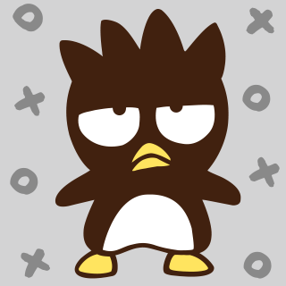

Bad Badtz-Maru, a male penguin with spiky hair, is one of the many characters produced by the Japanese company Sanrio and created by Hisato Inoue in 1993. Unlike the more popular Hello Kitty, he has an attitude and is one of the few characters that is marketed to all genders. He was born on April 1st (April Fool's Day).
Badtz-Maru has two best friends, who are often found accompanying him: Pandaba, a female Giant Panda who always is seen in a short frilly skirt, and Hana-Maru, a male white seal.